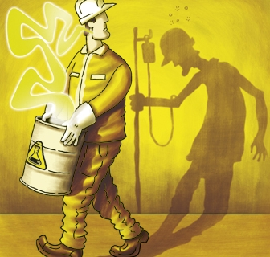
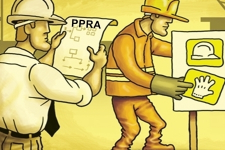
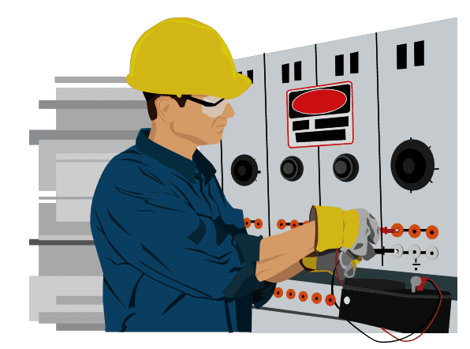
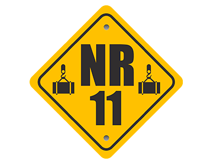

INTRODUÇÃO
As normas regulamentadoras (NRs) foram criadas para proteger os funcionários durante o expediente de trabalho e devem ser aplicadas por todas as empresas do Brasil. Neste contexto, é papel da medicina ocupacional orientar empregadores e empregados a fim de garantir a saúde e a segurança no ambiente de trabalho.
Os principais objetivos das normas regulamentadoras, são:
- promoção e garantia da integridade da saúde física e psíquica dos trabalhadores;
- definição de procedimentos de prevenção de acidentes e de medidas de proteção coletiva e individual;
- promoção de políticas de saúde e segurança no trabalho em empresas de todo o Brasil;
- regulamentação de uma legislação relativa à saúde, à segurança e à medicina do trabalho.
Como surgiu?

Antes das NRs, o número de acidentes e de adoecimentos era alto e, por isso, fez-se necessário que o governo inserisse parâmetros legais regulatórios.
No Brasil, na época em que as normativas foram criadas, não só o setor da construção civil, mas todas as demais áreas careciam de um norteamento legal para que pudessem ter ações de melhorias nos ambientes de trabalho.
Em 8 de Julho de 1978, o Ministério do Trabalho e Emprego (MTE), com o objetivo de padronizar, fiscalizar e fornecer orientações sobre procedimentos obrigatórios relacionados à segurança e à medicina do trabalho, aprovou 28 Normas Regulamentadoras (NRs) – hoje já são 36 – que tratam do assunto.
NRS
- NR7
- NR8
- NR9
- Para quem se aplica o programa de prevenção de riscos ambientais?
- Como a NR9 se antecipa aos riscos no ambiente de trabalho:
- Riscos físicos e químicos da NR 9:
- NR10
- Para quem se aplica esta norma?
- Onde se aplica?
- Geração
- Transmissão
- Distribuição
- Consumo
- Projeto
- Construção
- Montagem
- Operação
- Manutenção das instalações elétricas e quaisquer trabalhos feitos em suas proximidades
- NR11
- NR12
A NR-07 é caracterizada como Norma Geral pela Portaria SIT nº 787, de 28 de novembro de 2018, regulamenta em relação à saúde do trabalhador, sem estar condicionada a outros requisitos, como atividades, instalações, equipamentos ou setores e atividades econômicas específicas. Desde a sua publicação, a norma passou por dez processos revisionais, sendo três de ampla revisão, e os demais para alterações pontuais.
Para o acompanhamento permanente da implementação da NR-07, as atualizações da norma são discutidas diretamente no âmbito da Comissão Tripartite Paritária Permanente CTPP.
A redação original da NR-07 se limitava a estabelecer parâmetros básicos para a realização de exames médicos ocupacionais. Os parâmetros mínimos e as diretrizes gerais para a elaboração do Programa de Controle Médico de Saúde Ocupacional. Qual é o seu objetivo? Promover a preservação da saúde de todos os trabalhadores.
Importantes Alterações: Em 1990,é excluída a abreugrafia do conjunto de exames obrigatórios constantes da NR-07, de forma a proteger a saúde humana de exposições repetidas e desnecessárias a radiações ionizantes. Com essa atualização a norma se ajustava às diretrizes e pareceres técnicos do Ministério da Saúde e da Organização Mundial da Saúde (OMS), que desaconselham a utilização generalizada da abreugrafia como método de diagnóstico de tuberculose.
Em 1996, alterações em alguns itens como: a determinação de realização do exame médico demissional até a data da homologação da rescisão do contrato de trabalho, caso o último exame ocupacional tivesse ocorrido em prazos específicos definidos, em função do grau de risco da empresa.
A NR 8 estabelece requisitos técnicos mínimos que devem ser observados nas edificações, para garantir segurança e conforto aos profissionais.
Observada através de requisitos técnicos, é a NR 8 que garante a qualidade das condições de trabalho para todos que atuam nas mais diversas atividades em um canteiro de obras.
A norma define parâmetros que observam as condições climáticas presentes para proteção da chuva, exposição excessiva dos funcionários ao sol e etc. Tudo isso, estabelecendo condições de conforto no local de trabalho, o que influencia diretamente nas atividades da obra positivando os resultados no momento da conclusão do projeto.
Para que este resultado seja atingido, a norma exige coerência e comprometimento de toda a equipe. Será após diversas etapas de risco e trabalho duro que a edificação poderá se considerar um campo produtivo e seguro de trabalho.

É a norma regulamentar responsável pelo Programa de Prevenção de Riscos Ambientais, também conhecida como PPRA. A NR9 determina a obrigatoriedade de proteção necessária para assegurar a saúde física e mental dos trabalhadores em ambientes insalubres.
Para todos os empregadores brasileiros, mesmo que conte com apenas um funcionário. A PPRA previne os riscos nos mais diferentes ambientes de trabalho.
Grupo 1: riscos físicos
Grupo 2: riscos químicos
Grupo 3: riscos biológicos
Grupo 4: riscos ergonômicos
Grupo 5: riscos de acidentes
Risco físico: ocasionado pelo calor
Risco químico: ocasionado pelos fumos
É de responsabilidade do empregador identificar os riscos ambientais NR 9 e tomar as medidas cabíveis para eliminar os perigos. Essas medidas devem ser tomadas antes da contratação dos funcionários.

Esta NR estabelece os requisitos e condições mínimas objetivando a implementação de medidas de controle e sistemas preventivos, de forma a garantir a segurança e a saúde dos trabalhadores que, direta ou indiretamente, interajam em instalações elétricas e serviços com eletricidade.
A todos os trabalhadores que se envolvem com instalações e serviços com riscos elétricos.
Esta NR se aplica durante as fases de:
E durante as etapas de:
Observando-se as normas técnicas oficiais estabelecidas pelos órgãos competentes e, na ausência ou omissão destas, as normas internacionais cabíveis.
Alterações feitas nesta NR
Já houveram 4 alterações, e a última delas ocorreu em função da harmonização dos requisitos sobre capacitação, direitos e obrigações previstos na nova versão da NR-01 – Disposições Gerais, trazida pela Portaria SEPRT n° 915.
Conforme agenda regulatória definida durante a 97ª Reunião Ordinária da CTPP, a modernização da NR-10 encontra-se em processo de discussão de forma tripartite, a fim de atender às demandas sociais, tanto no escopo técnico, como na seara da fiscalização do ambiente laboral do setor energético.

Objetivo:
Ao longo dos seus quarenta e dois anos de existência ( desde 08 de junho de 1978),a NR 11 tem por objetivo estabelecer medidas de segurança para o trabalho dos funcionários em transporte, armazenamento e manuseio de materiais e cargas. Tudo isso com o intuito de reduzir o número de acidentes no ambiente de trabalho. Já que, frequentemente, estes colaboradores trabalham com peso, máquinas ou em altura. (SIENGE – 2018)
Obrigações e para quem se aplica:
A NR-11 lista as obrigações devidas à cada tipo de atividade logística, as quais concernem ao transporte, movimentação e armazenamento de cargas diversas. A norma se aplica a transportadoras, galpões de armazenamento, canteiros de obras, almoxarifados, centros de distribuição, etc. (VG - 2019)
Alterações feitas nesta NR:
Foi alterada em um total de 3 vezes, sendo tais, para adaptação as condições trabalhistas exigidas no momento, paralelo a uma dessas alterações, há a determinância de que as inspeções rotineiras e manutenções sejam realizadas por profissional capacitado ou qualificado. (Governo Federal – 1978)
O que é NR-12?
A NR-12 diz respeito às empresas que utilizam de máquinas e equipamentos em seus processos de fabricação de produtos, como uma marcenaria, tornearia e açougue, por exemplo.
Quando surgiu a NR12?
A Norma Regulamentadora 12 foi criada em 8 de junho de 1978 pelo Ministério do Trabalho e Emprego , mas devido às constantes mudanças e evolução da indústria nacional, passou por diversas alterações desde então. A última modificação foi em 30 de julho 2019.
Objetivo
A NR 12 tem como objetivo a prevenção de acidentes e de doenças ocupacionais durante o uso de máquinas e equipamentos.
Onde deve ser aplicada?
A NR 12 é de grande importância, pois tem o objetivo de organizar uma grande quantidade de questões relacionadas à segurança do trabalho, por isso, deve ser aplicada em indústrias em geral.